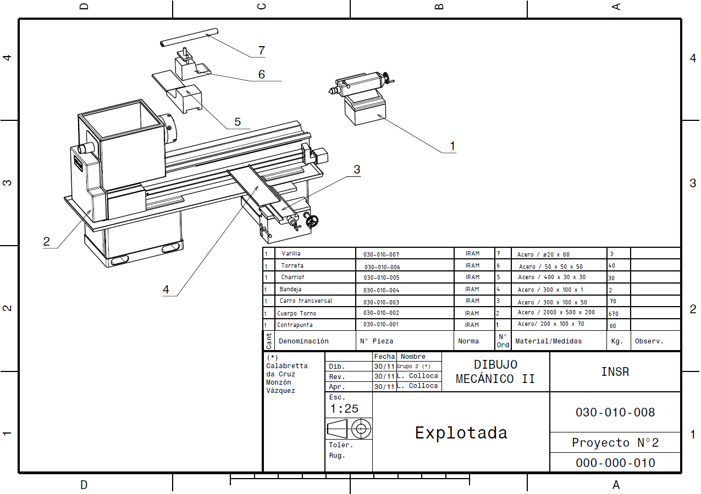

A lo largo de la secundaria fui haciendo varios proyectos, entre ellos modelados 3d, diseño de dibujos técnicos, hasta piezas mecanizadas con máquinas y herramientas.
A continuación, un plano de una explotada del conjunto estático de un Torno mecanico paralelo
